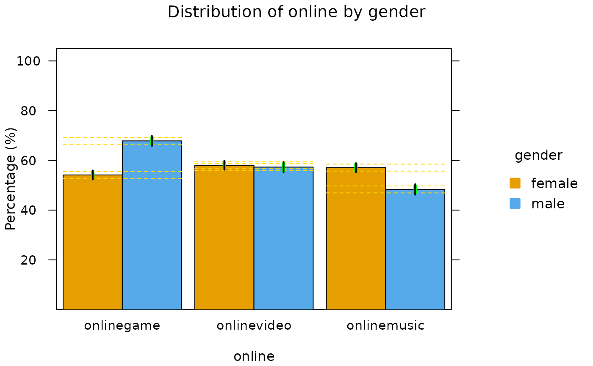

Between SEs
between(bymro)
| bymro | a bymro object |
|---|
something about between.
Junjie Zheng
mr <- iNZightMR(online ~ onlinegame + onlinevideo + onlinemusic, data = census.at.school.5000) (bt <- between(byMRO(mr, ~gender, mroPara))) #> $onlinegame #> est ses ErrBars confL confU compL compU #> female 0.5415075 0.009286403 0.01350162 0.5233061 0.5597088 0.5280059 0.5550091 #> male 0.6785375 0.010177073 0.01350162 0.6585904 0.6984846 0.6650359 0.6920391 #> count #> female 2879 #> male 2106 #> #> $onlinegame.diff #> est ses confL confU #> female - male -0.13703 0.01377716 -0.1640333 -0.1100268 #> #> $onlinevideo #> est ses ErrBars confL confU compL compU #> female 0.5804099 0.009197275 0.01388558 0.5623832 0.5984365 0.5665243 0.5942954 #> male 0.5731244 0.010778192 0.01388558 0.5519991 0.5942497 0.5592388 0.5870100 #> count #> female 2879 #> male 2106 #> #> $onlinevideo.diff #> est ses confL confU #> female - male 0.007285458 0.01416896 -0.0204857 0.03505661 #> #> $onlinemusic #> est ses ErrBars confL confU compL compU #> female 0.5710316 0.009224055 0.01398555 0.5529525 0.5891108 0.5570461 0.5850172 #> male 0.4833808 0.010889321 0.01398555 0.4620377 0.5047239 0.4693953 0.4973664 #> count #> female 2879 #> male 2106 #> #> $onlinemusic.diff #> est ses confL confU #> female - male 0.08765079 0.01427097 0.0596797 0.1156219 #> #> attr(,"class") #> [1] "between" #> attr(,"type1") #> [1] "gender" #> attr(,"Topic") #> [1] "online" if (requireNamespace("iNZightPlots")) barplotMR(bt) 